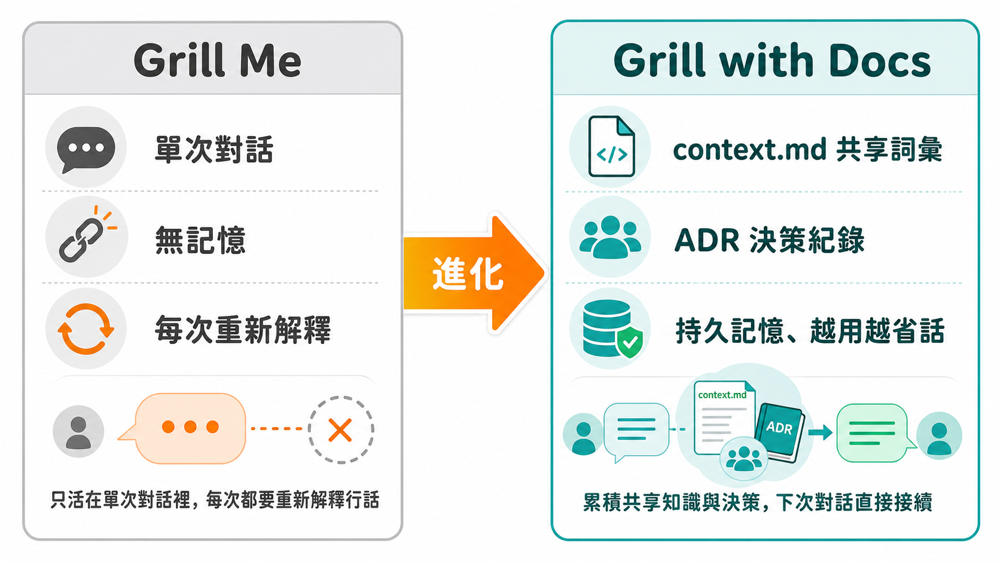
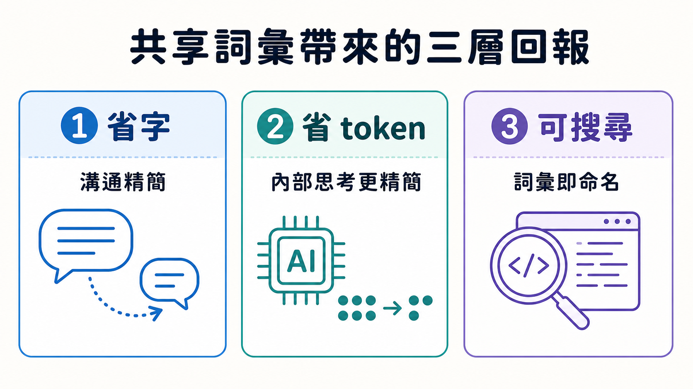

一個作者親口說每天收到五封感謝信的作品，通常不會是被作者自己動手拆掉的那一個。但 Matt Pocock 做的正是這件事。他寫的 Grill Me skill——一段讓 LLM 對你窮追猛打式提問、直到雙方對需求達成共識的簡短指令——被使用者形容成「game changer」「goated」，甚至有人拿它來做工程以外的事：有人用它訪問自己，把記憶中關於母親的片段一一挖出來，寫成一篇悼詞。這種評價放在任何產品身上都足以讓人躺著吃老本。他偏偏在影片一開頭就說，這東西已經被他自己換掉了。
理由並不是 Grill Me 不管用，而是它管用的方式有一個結構性漏洞：它只活在單次對話裡。
每次都要重新解釋一遍的稅
Grill Me 的做法很直白：丟給 AI 一個需求，AI 沿著設計樹的每一根分支往下問，把決策之間的依賴一個個解開，直到雙方達成「共享理解」。這套機制在單一次對談裡效果拔群——Pocock 示範時丟進去一個新功能構想：要在他的課程平台裡新增一種叫做「pitch」的實體，概念上借用 Mr. Beast 那套「先想包裝、再想內容」的邏輯，pitch 就是影片的標題、描述、切入角度，做出一堆 pitch 之後挑最好的做成影片。
問題出在，這段話裡混著兩種語言。一種是「pitch 是什麼」這類他當場現想的詞，講給觀眾聽也講給 agent 聽，大家一起從頭學。另一種是他自己心裡早就有答案、卻要求 agent 從零猜起的行話——比如「standalone video」，對他來說理所當然是「不屬於任何課程或單元的影片」，但 agent 沒有這個上下文，只能在對話中重新問一次，或者去翻程式碼猜。用得越久，這種摩擦感越明顯：agent 話講得囉唆，他得打斷說「這個已經有名詞了」；有時候是他自己講得囉唆，而 agent 沒能力糾正他；更常見的情況是，兩人在對話中好不容易磨出一套漂亮的共同說法，講完就消失了，沒有任何地方留下記錄。下一次開新的 session，一切歸零，重新來過。
這不是 Grill Me 設計得不好，而是它從沒打算解決「記憶」這件事。它解決的是單次對齊，而 Pocock 真正卡住的地方，是每次要花時間把上一輪已經講清楚的東西，再講一遍。
借一本二十年前的書來解題
他給出的解法，借用了一個比 LLM 早了將近二十年的概念：Eric Evans 那本領域驅動設計聖經裡的「Ubiquitous Language」（通用語言）。這個概念原本是講給人聽的——一個團隊裡，寫程式的工程師、懂業務的領域專家、還有程式碼本身，三方應該共用同一套詞彙。這樣領域專家才能直接說「這個區塊有問題」，工程師立刻明白指的是哪裡，程式碼裡的變數命名也對得上，不需要三邊各自翻譯。
Pocock 的洞察是，這套講給人類團隊聽的道理，原封不動可以套用在人和 AI 之間。他先做的是一個獨立的 ubiquitous language skill，在 grilling 過程中一旦發現語言需要磨清楚，就呼叫它，邊聊邊把結果寫進一份 ubiquitous-language.md。用了一段時間後，他發現自己同時在用兩個 skill，索性把兩者合併，做出了現在的主角：Grill with Docs。
機制上多了什麼

Grill with Docs 開頭那段提問文字跟 Grill Me 幾乎一模一樣，差別在於它多了兩件事。
第一，它會主動去找一份 context.md，裡面記錄這個專案裡所有的共享詞彙。這個檔案對應到 DDD 裡「bounded context」的概念——同一個詞彙圈子的邊界。如果專案小，一個 repo 一份 context.md 就夠；如果是巨大的 monorepo，可以做一張 context map，底下切出多個各自獨立的語言圈。第二，在對談過程中，它會主動拿新出現的用法去對照既有的詞彙表，發現用詞模糊就會逼你把它講清楚、討論具體情境、跟程式碼做交叉核對，並且隨時把結果寫回這份文件。
實際操作時可以看到差異：Pocock 重啟同一個新增 pitch 功能的 grilling session,agent 一開口就說「context.md 裡已經定義了 standalone video，是 lesson ID 為 null 的影片」，然後才問接下來的問題——先確認語言邊界，再談實作細節。它問 pitch 跟 standalone video 之間是一對多還是一對一，問「standalone」這個詞現在有沒有語意衝突（因為之後某些影片可能既是獨立影片、也掛著一個 pitch），問 pitch 的狀態該有哪些、能不能自由切換，問一個 pitch 能不能連結零支影片，甚至一路問到刪除時要用什麼刪除策略（cascade 還是 restrict）。這些聽起來像是在摳字眼，但 Pocock 自己點破了一件事：這套詞彙不只是跟 AI 溝通用的中介語言，最終會變成所有變數名稱、檔案名稱的來源，也會變成使用者在介面上實際看到的文字。摳字眼摳得夠早，後面所有程式碼的可讀性都跟著受益；但也不能無限摳下去——他自己在示範裡途中就喊停，說「夠好了，先出貨，之後語言要換再重構」。
有些事情共享詞彙救不了
context.md 解決的是「這個詞是什麼意思」，但有一類問題它天生管不到：為什麼當初選了這個、不選那個。對於那些難以逆轉、而且沒有上下文就會讓人一頭霧水的決策——比如選了某個資料庫策略而不是另一個，而這個選擇背後有真正的取捨——Pocock 另外引入了 Architectural Decision Record(ADR)。ADR 是放在 repo 裡的簡單 markdown 檔案，專門記錄「非顯而易見」的決定。他劃了一條清楚的線：如果兩個方案是可以互換、之後想換就換的那種小事，不值得寫 ADR；只有那種換了要付出真實代價、而且旁人光看程式碼猜不出原因的決策，才值得留下記錄。這是 context.md 之外另一層文件，兩者分工明確，一個管詞彙的一致性，一個管決策的可追溯性。
這套麻煩事換來什麼

代價很清楚：比起直接開始寫程式，先跟 AI 磨半天語言、維護兩份文件，感覺是拖慢速度。Pocock 提出的回報也很具體，分三層。第一層是省字：雙方一旦共用詞彙，AI 不需要每次都囉唆地把整件事重新描述一遍，一句「standalone videos 有變動，pitch 顯示邏輯要跟著調」就夠了。第二層更隱蔽——這種簡潔不只出現在它跟你說話的內容裡，連它自己內部的思考過程都變得更精簡，因為語言模型本來就是拿語言在對自己思考，詞彙對齊了，thinking 過程用的 token 也跟著減少，推理跟你的意圖對得更準。第三層是回到程式碼本身：因為你跟 AI 溝通用的詞，跟程式碼裡的命名是同一套，之後要找「所有跟 pitch 有關的東西」，直接搜尋這個詞就找得到，程式碼的可導覽性因此提高。他自己也補了一句，這幾項好處其實就是 DDD 原本對人類團隊承諾的那些好處，只是這次受益的多了一個非人類的閱讀者。
Grill Me 沒有被淘汰，只是換了位置
面對「你是不是把自己捧紅的東西砍了」這個問題，Pocock 的答案是分工，不是取代。他把 Grill Me 挪進了 skills 清單裡的「productivity」分類——用在沒有程式碼庫的場景，比如整理思路、甚至前面提到的那個訪談式悼詞寫作。而在專案剛起步、還沒有一行程式碼、連詞彙都還沒定下來的階段，他反而建議直接用 Grill with Docs，因為那正是共享語言最需要被建立的時刻。簡單說：有程式碼庫用 Grill with Docs，沒有就用 Grill Me。
這個結論本身沒有太多戲劇性，但它指向一個值得記住的判斷方式：當一個工具解決的是「單次對齊」，而你重複遇到的是「同樣的解釋要講第二次、第三次」，問題就不在於加強那個工具，而在於它從一開始就少了一層記憶。語言模型不會自己記得你上次說過的話，除非你把它寫下來，寫在一個雙方都會去讀的地方。